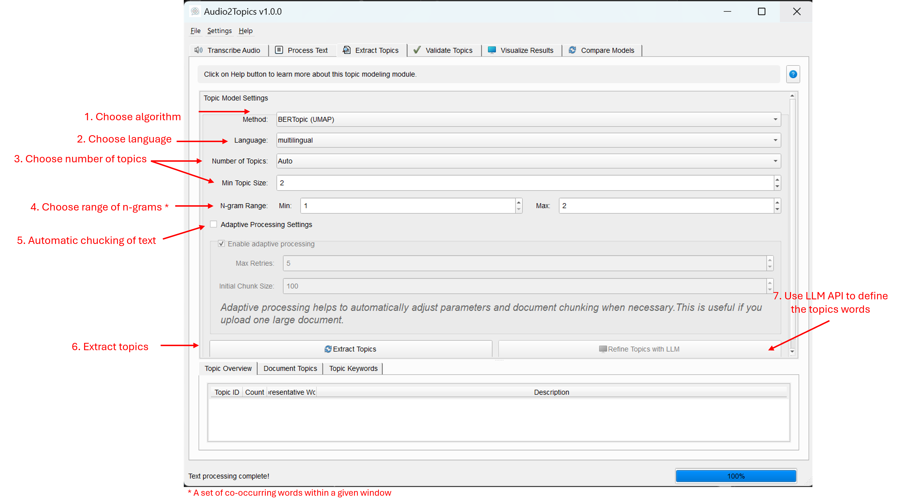

Topic Modeling Module
Overview
The Topic Modeling module is the heart of the Audio2Topics application, enabling automatic discovery of thematic patterns in text. It extracts meaningful topics from processed documents, making it possible to understand the main themes in your audio content without having to read through every transcript.
This module provides: - Multiple topic modeling approaches (BERTopic, NMF, LDA) - Adaptive processing for small document collections - Topic visualization and exploration tools - LLM-powered topic refinement - Advanced options for customizing the topic extraction process
Main interface of the Topic Modeling Tab 
Core Components
TopicModeler Class
The TopicModeler class is the main interface for topic modeling functionality. It manages the extraction process and provides methods for handling topic models.
Methods
| Method | Description | Parameters | Returns |
|---|---|---|---|
extract_topics() |
Starts topic modeling on documents using a worker thread | documents: List of document stringslanguage: Language for topic modelingn_gram_range: Tuple of min and max n-gram sizesmin_topic_size: Minimum topic sizenr_topics: Number of topics to extract...(other parameters) |
Returns the worker thread that can be connected to signals |
transform_documents() |
Transforms new documents using an existing model | documents: List of document strings |
Tuple of (topics, probabilities) |
get_topic_info() |
Gets information about the topics in the model | None | Dictionary with topic information |
get_topics() |
Gets the topics and their words from the model | None | Dictionary mapping topic IDs to lists of (word, score) tuples |
save_model() |
Saves the topic model to disk | path: Path to save the model |
None |
load_model() |
Loads a topic model from disk | path: Path to the saved model |
None |
TopicModelingWorker Class
The TopicModelingWorker extends QThread to handle topic modeling in a background thread, keeping the UI responsive during processing.
Signals
| Signal | Description | Parameters |
|---|---|---|
progress_updated |
Emitted to update progress | int: progress percentage, str: status message |
topics_extracted |
Emitted when topics are extracted | topics: list of topic assignmentsprobs: list of topic probabilitiestopics_words: dictionary of topic wordstopic_info: topic informationmodel: the trained model |
error_occurred |
Emitted when an error occurs | str: error message |
show_elbow_dialog |
Emitted to show the elbow method dialog | list: model scores, list: topics range |
Topic Modeling Approaches
The module supports multiple topic modeling methods, each with different strengths:
1. BERTopic with UMAP
This is the primary method and provides the highest quality results for most use cases.
- Strengths:
- Semantic understanding of text through BERT embeddings
- High-quality, coherent topics
- Works well with multiple languages
-
Captures nuanced themes in text
-
Limitations:
- Can fail with very small document sets (less than ~20 documents)
- More computationally intensive than traditional methods
2. BERTopic with PCA
A more stable variant of BERTopic that works better with smaller document sets.
- Strengths:
- More robust with small document collections
- Still leverages BERT's semantic understanding
-
Better stability than UMAP-based approach
-
Limitations:
- Topics may be slightly less coherent than with UMAP
- Still requires a minimum number of documents
3. NMF (Non-negative Matrix Factorization)
A traditional matrix factorization approach that works well with smaller document sets.
- Strengths:
- Very stable even with very few documents
- Deterministic results (same input always gives same output)
-
Computationally efficient
-
Limitations:
- Less semantic understanding than BERTopic
- Based solely on word co-occurrence patterns
- Typically less coherent topics
4. LDA (Latent Dirichlet Allocation)
The classic probabilistic topic modeling algorithm, now enhanced with an elbow method for optimal topic selection.
- Strengths:
- Well-established probabilistic model
- Works well with larger documents
- Explicit topic distributions for each document
-
Includes elbow method for automatically finding optimal number of topics
-
Limitations:
- Performs poorly with very short texts
- Less semantic coherence than BERTopic
- May require more tuning
User Interface
The TopicTab class provides a comprehensive interface for configuring, running, and exploring topic models.
UI Components
- Topic Model Settings:
- Method selection (BERTopic UMAP, BERTopic PCA, NMF, LDA)
- Language selection
- Number of topics control
- Minimum topic size
-
N-gram range
-
LDA-specific Options:
- Elbow method controls for finding optimal topic count
-
Min/max topics range and step size
-
Adaptive Processing Settings:
- Toggle for enabling/disabling adaptive processing
-
Max retries and chunk size settings
-
Topic Exploration:
- Topic overview table with keywords and descriptions
- Document-topic assignment view
-
Detailed keyword exploration for each topic
-
LLM Refinement:
- Integration with OpenAI and Anthropic models
- Topic description generation
- Interactive refinement dialog
Dialogs
- ElbowMethodDialog: Interactive tool for finding the optimal number of topics when using LDA
- RefineTopicsDialog: Interface for enhancing topic interpretability with LLM-generated descriptions
Usage Guide
Configuring Topic Modeling
- Select a Topic Modeling Method:
- BERTopic (UMAP): Best quality but may fail with small document sets
- BERTopic (PCA): Good quality, more stable with small document sets
- NMF: Traditional method, very stable but less semantic coherence
-
LDA: Classic topic modeling, works well with larger document sets
-
Choose Basic Parameters:
- Language: Select the primary language of your documents
- Number of Topics: Set to "Auto" or choose a specific number
- Min Topic Size: Minimum number of documents required to form a topic
-
N-gram Range: Controls whether phrases (2+ words) can be in topics
-
Set Method-Specific Options:
- For LDA, you can enable the elbow method to automatically find the optimal number of topics
-
Configure the min/max topics range and step size for elbow analysis
-
Configure Adaptive Processing (for handling challenging document sets):
- Enable adaptive processing to automatically adjust parameters if errors occur
- Set max retries and chunk size for document splitting
Extracting Topics
- Click "Extract Topics" to begin the process
- The progress bar shows status updates during extraction
- If using LDA with elbow method, an interactive dialog will appear to help select the optimal number of topics
- When complete, the extracted topics will be displayed in the Topics view
Understanding the Results
The results are presented in three tabs:
- Topic Overview:
- Shows each topic's ID, document count, representative words, and description
-
Provides a high-level view of all topics in your collection
-
Document Topics:
- Lists each document with its assigned topic and probability
-
Shows how documents are distributed across topics
-
Topic Keywords:
- Displays detailed keywords for a selected topic
- Shows the importance score for each word
Refining Topics with LLM
- Click "Refine Topics with LLM" to improve topic interpretability
- Select the LLM provider (OpenAI or Anthropic)
- Choose which topics to refine
- Click "Refine Topics" to generate human-readable descriptions
- Review the results and click "OK" to apply the descriptions
# Code example for topic extraction
from core.topic_modeler import TopicModeler
# Initialize the topic modeler
topic_modeler = TopicModeler()
# Extract topics from documents
worker = topic_modeler.extract_topics(
documents=processed_documents,
language="english",
n_gram_range=(1, 2),
min_topic_size=2,
nr_topics="auto",
method="bertopic"
)
# Connect to signals
worker.progress_updated.connect(update_progress)
worker.topics_extracted.connect(handle_topics)
worker.error_occurred.connect(handle_error)
Adaptive Processing
The adaptive processing feature helps overcome common challenges in topic modeling, particularly with small document collections or single large documents.
How It Works
When enabled, adaptive processing will:
- Document Chunking: If you have very few documents (especially just one), it will automatically split them into smaller chunks to create a sufficient number of documents for topic modeling
- Method Fallbacks: If the primary method fails, it will try alternative approaches in this order:
- BERTopic with UMAP
- BERTopic with PCA
- NMF or LDA
- Parameter Adjustments: It will automatically adjust key parameters like n_neighbors and n_components in UMAP to better match your document collection
When to Use It
- When processing a single large document
- When working with very few documents (less than 10-20)
- When experiencing dimensionality errors with UMAP
- When standard parameters fail to produce results
Configuration
- Max Retries: How many parameter combinations to try before giving up
- Initial Chunk Size: Word count for document splitting (if needed)
LDA Elbow Method
Finding the optimal number of topics is critical for meaningful results. The LDA Elbow method provides an objective approach to this problem.
How It Works
- The system trains multiple LDA models with different numbers of topics
- Each model is evaluated for quality using log-likelihood and topic distinctiveness
- The results are plotted as a quality curve
- The "elbow point" in this curve indicates the optimal number of topics - the point where adding more topics yields diminishing returns
- You can accept the recommended number or choose your own
Using the Elbow Method
- Select "LDA" as your topic modeling method
- Enable "Use elbow method to find optimal number of topics"
- Configure the range (min/max topics) and step size
- Run topic extraction
- When the dialog appears, review the curve and select the desired number of topics
Tips and Best Practices
Getting Better Results
- Document Preparation:
- Ensure documents are properly cleaned and processed
- Try to have at least 10-20 documents for meaningful topics
-
Documents should be substantial (at least several sentences)
-
Method Selection:
- Start with BERTopic (UMAP) for best quality
- Switch to BERTopic (PCA) if UMAP fails or you have fewer documents
- Use NMF for very small document sets
-
Try LDA for traditional probabilistic topic modeling
-
Parameter Tuning:
- Adjust the number of topics based on the size and diversity of your collection
- Increase min_topic_size for fewer, broader topics
- Decrease min_topic_size for more specific topics
-
Use bigrams (n_gram_range=(1,2)) to capture meaningful phrases
-
Topic Interpretation:
- Use the LLM refinement feature to get human-readable descriptions
- Look at the document-topic assignments to understand what documents contribute to each topic
- Check topic keywords to understand the essence of each topic
Troubleshooting
| Issue | Solution |
|---|---|
| "Dimensionality error" with BERTopic | Enable adaptive processing or switch to BERTopic (PCA) |
| Too many documents in Topic -1 (outlier topic) | Decrease min_topic_size or try a different topic modeling method |
| Topics don't make sense | Try a different method or adjust the number of topics |
| Processing fails with very few documents | Enable adaptive processing to automatically chunk documents |
| Want more interpretable topics | Use the "Refine Topics with LLM" feature |
Technical Details
Topic Representation
Topics are represented by:
- Topic IDs: Numeric identifiers for each topic (Topic -1 is the outlier topic)
- Keywords: Important words for each topic with relevance scores
- Document Assignments: Which documents belong to each topic
- Probabilities: How strongly each document relates to its assigned topic
Output Data Structures
- topics: List of topic IDs assigned to each document
- probs: List of topic probability distributions for each document
- topics_words: Dictionary mapping topic IDs to lists of (word, score) tuples
- topic_info: Dictionary with metadata about each topic, including counts and names
Model Persistence
You can save and load topic models for later use:
# Save a model
topic_modeler.save_model("my_topic_model.pkl")
# Load a model
topic_modeler.load_model("my_topic_model.pkl")
LLM Integration
The module integrates with OpenAI and Anthropic models to:
- Generate human-readable topic descriptions
- Improve topic interpretability
- Provide context that might not be evident from keywords alone
This feature requires valid API keys to be configured in the settings.